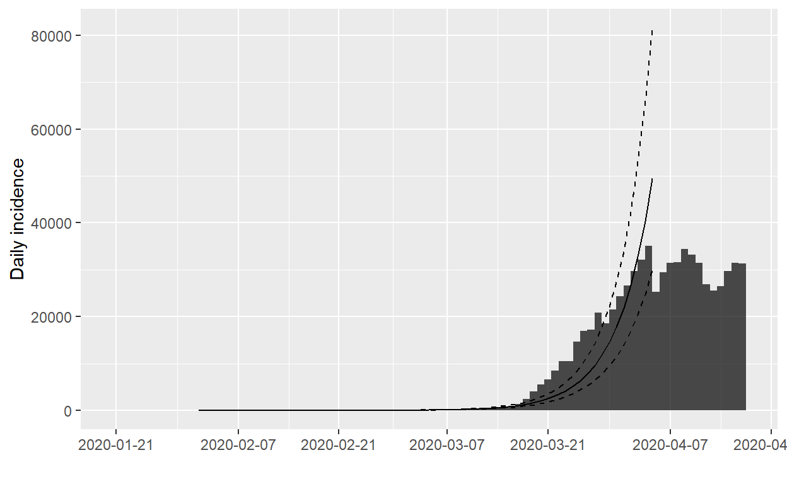
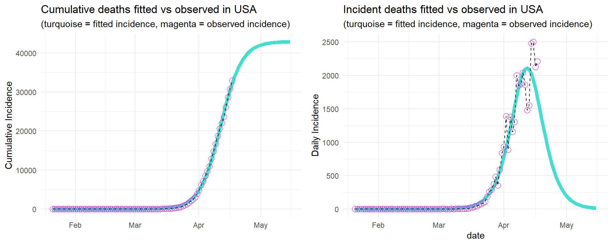
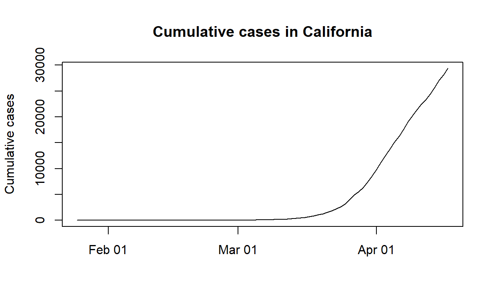
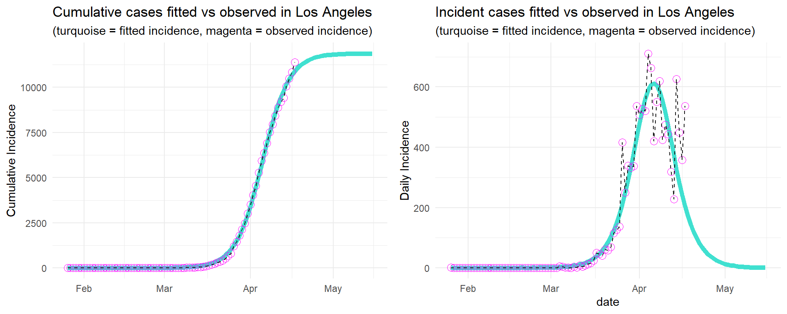
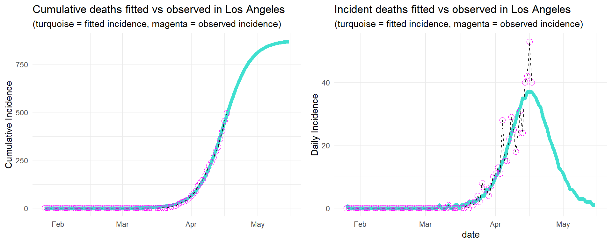

Table of Contents
Background
In the [previous post] (https://aksinghal86.github.io/covid19/posts/covid19-projections-using-GRM/), I used Generalized Richard’s Model, also known as Generalized Logistic Regression, to make some predictions for various countries around the world, but by the end of the article, I realized that fits were just as good, if not better, and much much faster by using just a simple logistic regression model. Part of the problem is that GRM is too sensitive to starting conditions, which ironically does not generalize well to all the countries and provinces/states. In fact, the highly respected and influential projections made by [IHME] (https://covid19.healthdata.org) also uses simple logistic regression, with a bunch of other statistical measures added in to control for variability for each parameter.
The motivation behind this article is to make some predictions at the US state and county level using simple logistic regression, which is of the form:
\[C(t) = p/(1+exp(- \alpha\ (t- \beta\ ))\], where:
- \(p\) is the asymptotic value of infections (the peak of the curve);
- \(\alpha\) is the growth rate prior to the peak of the infections; and
- \(\beta\) is where rate of change is maximal
Reference: [IHME] (https://ihmeuw-msca.github.io/CurveFit/methods/)
We’ll make our fits using the nlsLM function from the minpack.lm package, which uses the Levenberg-Marquardt method for fitting.
The Data
For now, I’ll start with US by state and by counties (where there are enough data points) for purposes of incorporating this into the [shiny app] (https://aksinghal86.shinyapp.io/covid19/)
Let’s use the data provided by NY Times Github because that’s what’s being used in the app
# A tibble: 20 x 8
date cases deaths cum_cases cum_deaths state fips county
<date> <int> <int> <int> <int> <chr> <dbl> <chr>
1 2020-01-21 1 0 1 0 All st~ 0 All cou~
2 2020-01-22 0 0 1 0 All st~ 0 All cou~
3 2020-01-23 0 0 1 0 All st~ 0 All cou~
4 2020-01-24 1 0 2 0 All st~ 0 All cou~
5 2020-01-25 1 0 3 0 All st~ 0 All cou~
6 2020-01-26 2 0 5 0 All st~ 0 All cou~
7 2020-01-27 0 0 5 0 All st~ 0 All cou~
8 2020-01-28 0 0 5 0 All st~ 0 All cou~
9 2020-01-29 0 0 5 0 All st~ 0 All cou~
10 2020-01-30 1 0 6 0 All st~ 0 All cou~
11 2020-01-31 1 0 7 0 All st~ 0 All cou~
12 2020-02-01 1 0 8 0 All st~ 0 All cou~
13 2020-02-02 3 0 11 0 All st~ 0 All cou~
14 2020-02-03 0 0 11 0 All st~ 0 All cou~
15 2020-02-04 0 0 11 0 All st~ 0 All cou~
16 2020-02-05 1 0 12 0 All st~ 0 All cou~
17 2020-02-06 0 0 12 0 All st~ 0 All cou~
18 2020-02-07 0 0 12 0 All st~ 0 All cou~
19 2020-02-08 0 0 12 0 All st~ 0 All cou~
20 2020-02-09 0 0 12 0 All st~ 0 All cou~Set up the Logistic Regression model
Let’s define our model using the equation above and use the nlsLM function to fit the regression model
Now a function to make predictions on a given data set using the fit
And finally a plotting function
US
Let’s make some predictions for US using the model defined above
Confirmed cases
Formula: C ~ p/(1 + exp(-a * (t - B)))
Parameters:
Estimate Std. Error t value Pr(>|t|)
p 6.975e+05 9.392e+03 74.27 <2e-16 ***
a 1.960e-01 2.897e-03 67.65 <2e-16 ***
B 7.628e+01 1.701e-01 448.32 <2e-16 ***
---
Signif. codes: 0 '***' 0.001 '**' 0.01 '*' 0.05 '.' 0.1 ' ' 1
Residual standard error: 4369 on 81 degrees of freedom
Number of iterations to convergence: 20
Achieved convergence tolerance: 1.49e-08Looks like the model converged and we have our estimates. Projected confirmed cases is topping out at about 700,000 people (estimate of p) with a growth rate of approximately 0.196 (estimate of a). We can cofirm the growth rate by a simpler log-linear fit using the incidence package (can implement a log-linear fit ourselves pretty easily as well)

<list of incidence_fit objects>
attr(x, 'locations'): list of vectors with the locations of each incidence_fit object
'before'
'after'
$model: regression of log-incidence over time
$info: list containing the following items:
$r (daily growth rate):
before after
0.20474865 -0.01097594
$r.conf (confidence interval):
2.5 % 97.5 %
before 0.18846953 0.22102776
after -0.04171745 0.01976558
$doubling (doubling time in days):
before
3.385357
$doubling.conf (confidence interval):
2.5 % 97.5 %
before 3.136019 3.677768
$halving (halving time in days):
after
63.15152
$halving.conf (confidence interval):
2.5 % 97.5 %
after 16.61528 -35.0684
$pred: data.frame of incidence predictions (59 rows, 6 columns)Not the best fit, likely due to underreporting of confirmed cases, but the estimated growth rate, r, is 0.205, which is pretty close to the one predicted by logistic regression

Not bad. Let’s see if we can do the same for deaths
Confirmed deaths
Formula: C ~ p/(1 + exp(-a * (t - B)))
Parameters:
Estimate Std. Error t value Pr(>|t|)
p 3.264e+04 3.812e+02 85.64 <2e-16 ***
a 2.278e-01 2.118e-03 107.55 <2e-16 ***
B 7.976e+01 1.153e-01 691.70 <2e-16 ***
---
Signif. codes: 0 '***' 0.001 '**' 0.01 '*' 0.05 '.' 0.1 ' ' 1
Residual standard error: 94.38 on 81 degrees of freedom
Number of iterations to convergence: 25
Achieved convergence tolerance: 1.49e-08The model expects to see close to 32,000 deaths with a growth rate of 0.23 in the early phase. Obviously, not great. Didn’t help that the government did nothing in the early stages or we could have severely limited this number.
Anyway, let’s make some predictions

We are in the decline phase with the assumption that the government doesn’t relax on social distancing measures, which is unpredictable given the current administration in place and its lack of ability to do even basic governance.
Let’ see how California is doing.
California
Confirmed cases

Formula: C ~ p/(1 + exp(-a * (t - B)))
Parameters:
Estimate Std. Error t value Pr(>|t|)
p 2.869e+04 1.535e+02 187.0 <2e-16 ***
a 1.940e-01 1.233e-03 157.4 <2e-16 ***
B 7.145e+01 6.999e-02 1020.9 <2e-16 ***
---
Signif. codes: 0 '***' 0.001 '**' 0.01 '*' 0.05 '.' 0.1 ' ' 1
Residual standard error: 82 on 77 degrees of freedom
Number of iterations to convergence: 25
Achieved convergence tolerance: 1.49e-08Max projected cases of about 29000 (estimate of p) with a growth rate of approximately 0.194.
Not bad. Let’s see if we can do the same for deaths
Confirmed deaths
Formula: C ~ p/(1 + exp(-a * (t - B)))
Parameters:
Estimate Std. Error t value Pr(>|t|)
p 1.017e+03 1.559e+01 65.22 <2e-16 ***
a 1.870e-01 2.147e-03 87.06 <2e-16 ***
B 7.524e+01 1.812e-01 415.23 <2e-16 ***
---
Signif. codes: 0 '***' 0.001 '**' 0.01 '*' 0.05 '.' 0.1 ' ' 1
Residual standard error: 3.829 on 77 degrees of freedom
Number of iterations to convergence: 14
Achieved convergence tolerance: 1.49e-08The model expects to see about 1,000 deaths in CA, which is on the lower end (e.g., compared to CA) probably because so many public health interventions were put in place early on.
And now for a county.
Los Angeles
Confirmed cases
Formula: C ~ p/(1 + exp(-a * (t - B)))
Parameters:
Estimate Std. Error t value Pr(>|t|)
p 1.063e+04 5.520e+01 192.5 <2e-16 ***
a 2.307e-01 1.746e-03 132.2 <2e-16 ***
B 7.013e+01 6.116e-02 1146.6 <2e-16 ***
---
Signif. codes: 0 '***' 0.001 '**' 0.01 '*' 0.05 '.' 0.1 ' ' 1
Residual standard error: 37.95 on 76 degrees of freedom
Number of iterations to convergence: 24
Achieved convergence tolerance: 1.49e-08Max projected cases of about 10000 (estimate of p) with a growth rate of approximately 0.23.

Confirmed deaths
Formula: C ~ p/(1 + exp(-a * (t - B)))
Parameters:
Estimate Std. Error t value Pr(>|t|)
p 4.655e+02 9.573e+00 48.63 <2e-16 ***
a 2.148e-01 3.049e-03 70.43 <2e-16 ***
B 7.548e+01 2.067e-01 365.27 <2e-16 ***
---
Signif. codes: 0 '***' 0.001 '**' 0.01 '*' 0.05 '.' 0.1 ' ' 1
Residual standard error: 1.897 on 76 degrees of freedom
Number of iterations to convergence: 14
Achieved convergence tolerance: 1.49e-08The model expects to see about 450 deaths in Los Angeles
